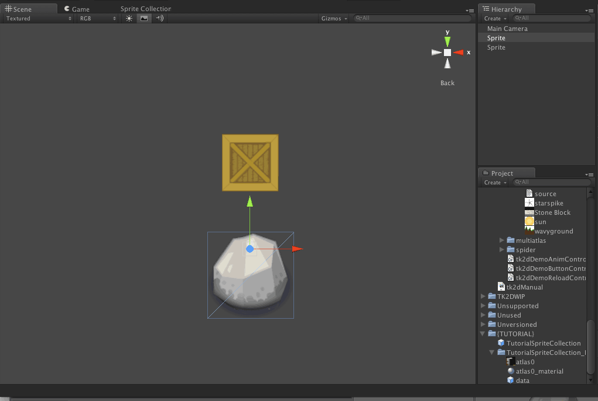
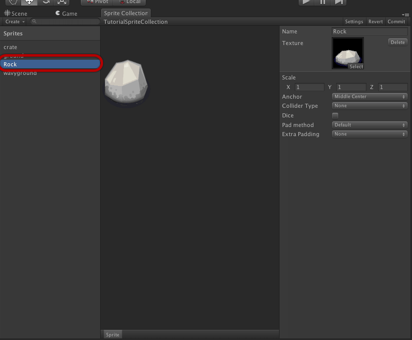
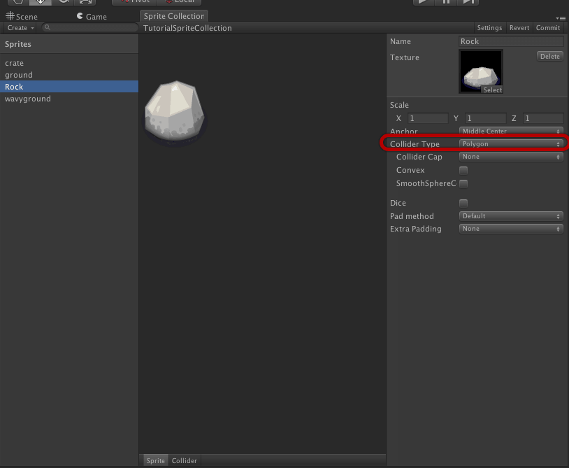
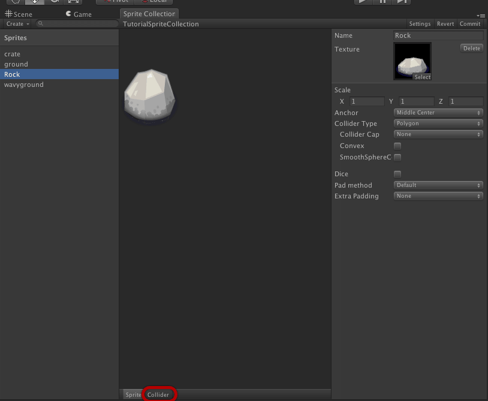
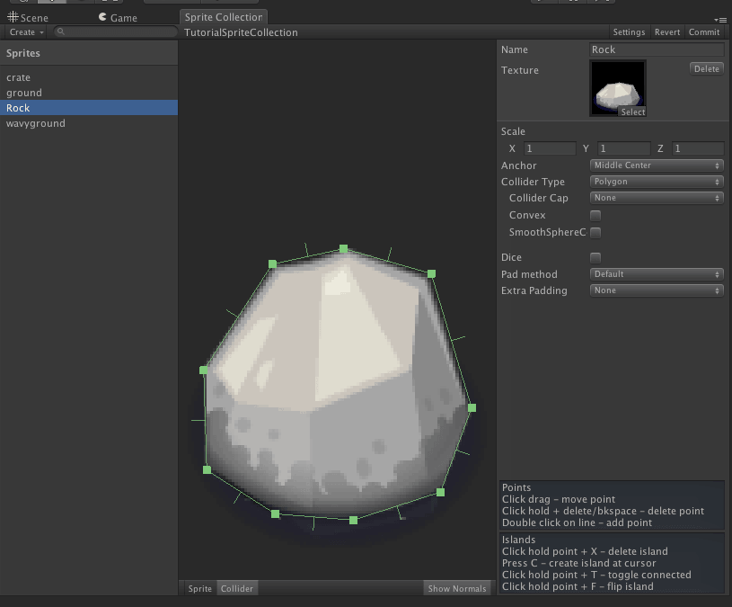
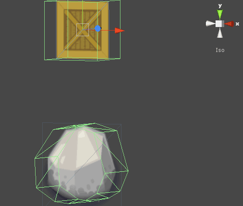

Documentation
Script Reference
Forum
Documentation
Script Reference
Forum
Add an instance of the rock sprite to the scene. Refer to Creating a sprite in the editor if you need detailed steps in doing this.

This sprite won't be represented well by a box, so we will create a polygon collider instead. Select the sprite collection and click "Open Editor...".
Select the rock sprite in the sprite collection editor.

Switch the Collider Type to Polygon. This will give you a box covering the entire texture. We will be shaping this rock to better suit the shape of the rock.

Switch the sprite view to collider edit mode.

Roughly match the shape by moving the polygon control points. Simply click and drag them to the desired position. Dont forget that you can zoom in using the mouse wheel or the 2 finger scroll gesture on Mac.
Double click on an edge to add a control point. Click and drag this to position it. More shortcut keys are listed in the right panel.
Repeat the previous step until you have a suitable shape to represent this rock.

Click commit to save your changes. The rock in the scene should now contain a mesh collider with the shape you defined.

Note: It is not possible to animate polygon colliders at the moment. 2D Toolkit will create the first collider and will not animate it.